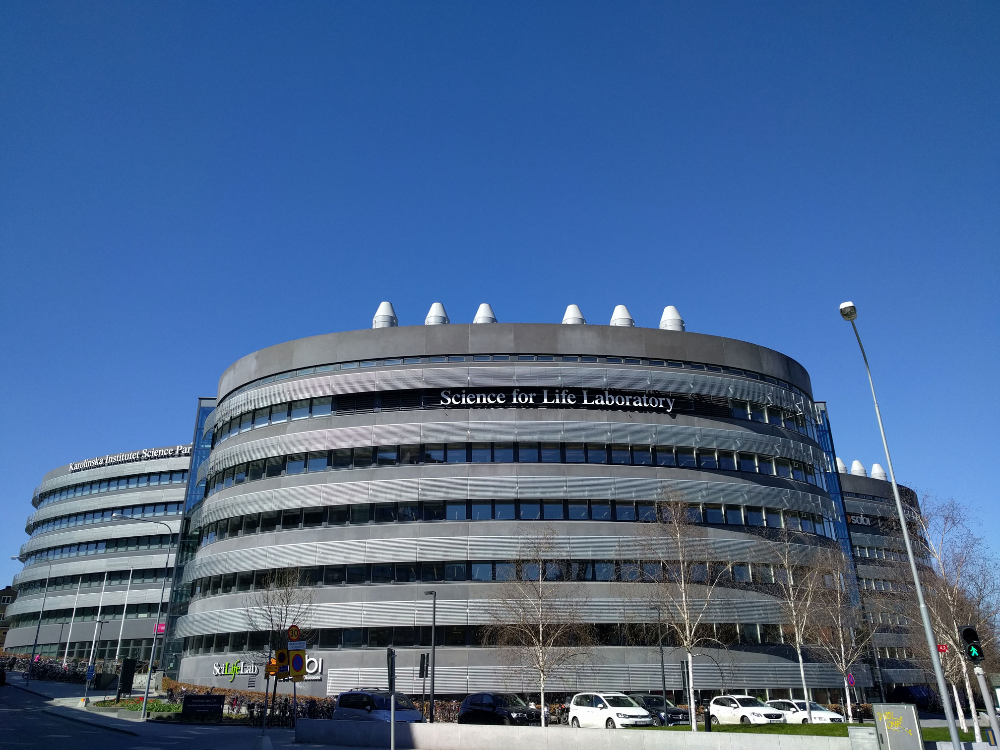

In August 2012 Melinda Gates
received an honorary doctorate at
Karolinska
Institutet in recognition
of her support for scientific work
on global
health issues at the Bill &
Melinda Gates Foundation. The award
recognizes
the couple's active and
long-term condition to improving
human health
where the need is great-
est, acheived through their work with
partners
worldwide.
Together, we are changing millions
, said Melinda
of lives and I find it inspiring and
ener-
gizing to witness firsthand the Karoli-
nska Institutet's ability,
knowledge, and
resources to help people around the
world live a better
life
Gates, co-chair of the Bill & Melinda
Gates Foundation.
Guided by the belief that every life
has equal value, Bill and Melinda
Gates
created the foundation to help all
people lead healthy, productives
lives. In
developing countries, the foundation
focuses on improving people's
health
and giving them the chance to lift
themselves out of hunger and
extreme
poverty.
In the United States, it seeks to
ensure that all people
- especially those
with the fewest resources - have access
to the
oppurtunity they need to suc-
ceed in school and life.
Grand, new
auditorium
for future
Nobel
lectures

Historic investment in SciLifeLab
Four Swedish universities is behind the Science for Life Laboratory, a huge new investments in life science research.
In 2013, the SciLifeLab is becoming a national research institute for major research in molecular biosciences and bioinformatics. SciLifeLab will grow to employ about 1000 scientists and have a turnover of about 1 billion SEK within a few years. In addition to funding from the government, the Knut and Alice Wallenberg Foundation will invest 220 million SEK on technology laboratories in SciLifeLab and Astra Zeneca intends to invest 5-10 million USD anually for five years.
SciLifeLab is a joint venture between four universities; Karolinska Institutet, KTH Royal Institute of Technology, Stockholm University and Uppsala University. The medical research focuses on investigating the molecular basis of complex human diseases, and seeks to find biomarkers that can help diagnose diseases and monitor their progress. SciLifeLab has facilities both in Stockholm and in Uppsala.
Karolinska Institutet and AstraZeneca strengthen their collaboration